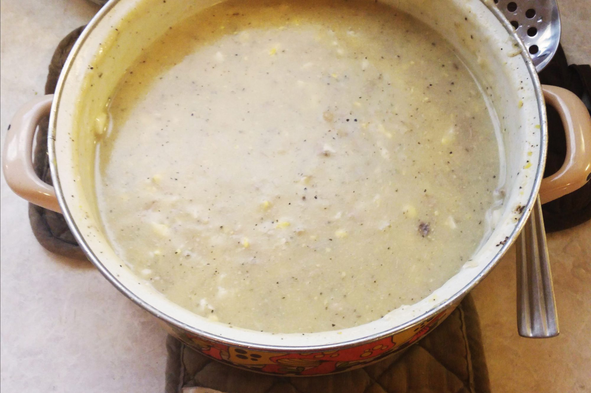

Giblet Gravy I

Ingredients
- 1 giblets from a turkey
- 1/2 teaspoon salt
- 1/2 teaspoon ground black pepper
- 1 cube chicken bouilon
- 1 stalk celery,halved
- 1/4 yellow onion
- 1 quart water
- 2 (14.5 ounce) cans chicken broth
- 4 hard-cooked eggs
- 2 tablespoons cornstarch
- 1/2 cup milk
Directions
-
In a 2 quart saucepan, simmer the giblets,salt,
pepper,bouilon, celery and onion in 1 quart of
water for 40 to 50 minutes.
-
Discard celery,onion and gizzard. Chop liver
and neck meat and return to pan. Add chicken
broth or if you have a turkey, use drippings
(about 1 1/2 cups and 1 can of chicken broth).
-
Chop eegs and add to broth. Mix cornstarch and
milk together and slowly add to broth. Stir well
until thickened. Reduce heat to low.
Nutrtion Facts
Per Serving: 69 calories;protein 6.8g;
carbohydrates 3.1g; fat 3g; cholesterol 130.4mg;
sodium 530.7 mg